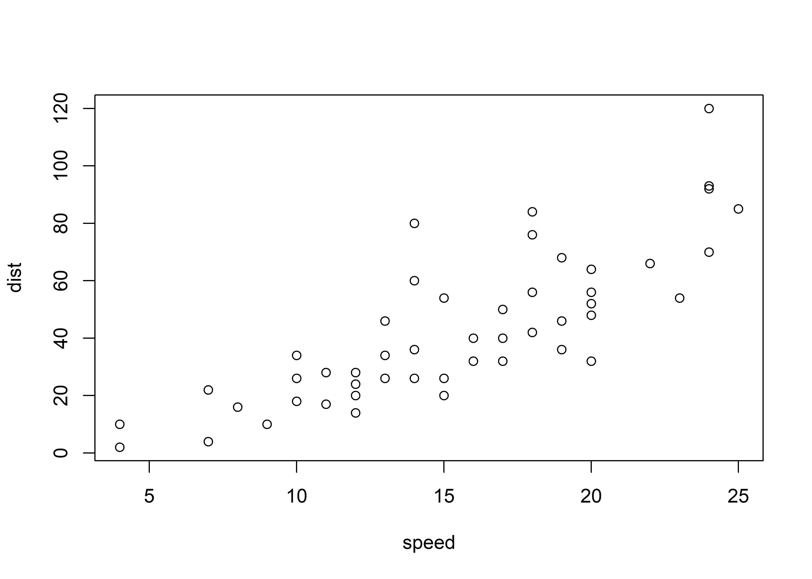
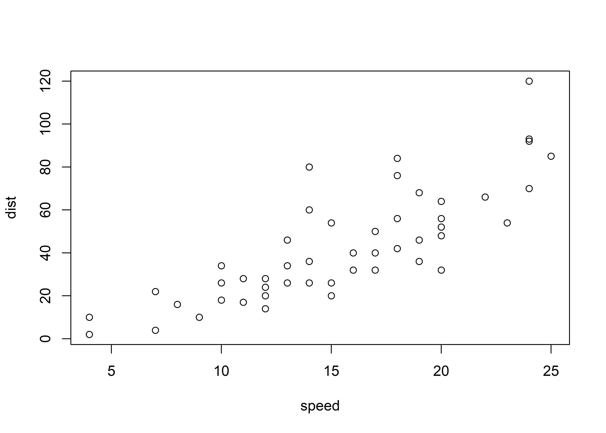

plot(cars)
title: “R Notebook” output: html_notebook
This is an R Markdown Notebook. When you execute code within the notebook, the results appear beneath the code.
Try executing this chunk by clicking the Run button within the chunk or by placing your cursor inside it and pressing Ctrl+Shift+Enter.
plot(cars)
Add a new chunk by clicking the Insert Chunk button on the toolbar or by pressing Ctrl+Alt+I.
When you save the notebook, an HTML file containing the code and output will be saved alongside it (click the Preview button or press Ctrl+Shift+K to preview the HTML file).
The preview shows you a rendered HTML copy of the contents of the editor. Consequently, unlike Knit, Preview does not run any R code chunks. Instead, the output of the chunk when it was last run in the editor is displayed.
We’re going to be doing all our spatial analysis and plotting today in R. Behind the scenes, R provides bindings to powerful open-source GIS libraries. These include the Geospatial Data Abstraction Library (GDAL) and Interface to Geometry Engine Open Source (GEOS) API suite, as well as access to projection and transformation operations from the PROJ.4 library. You needn’t worry about all this, but for the fact that you may need to install some of these external libraries first. The requirements vary by OS:
sf, lwgeom, maps, mapdata, spData, tigris, tidycensus, leaflet, tmap, tmaptoolstidyverse, hrbrthemesNote that you’ll need ggplot2 version 3.0.0 or above for the required plotting support of sf objects. That’s almost certainly the case, but now is a good time to upgrade you existing packages if you haven’t done that for a while.
Okay, let’s install (if necessary) and load everything. As per usual, I’ll also set my preferred plotting theme, but this is unnecessary.
if (!require("pacman")) install.packages("pacman")Warning: package 'pacman' was built under R version 4.3.2pacman::p_load(sf, tidyverse, hrbrthemes, lwgeom, rnaturalearth, maps, mapdata, spData, tigris, tidycensus, leaflet, tmap, tmaptools)
theme_set(hrbrthemes::theme_ipsum())